Bienvenue sur
mon JS portfolio
Explorez mes techniques et compétences en JavaScript
Voir techs Voir mes projets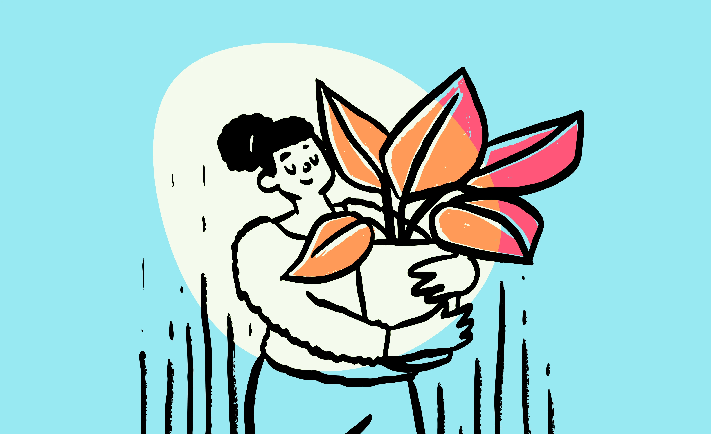
Explorez mes techniques et compétences en JavaScript
Voir techs Voir mes projets
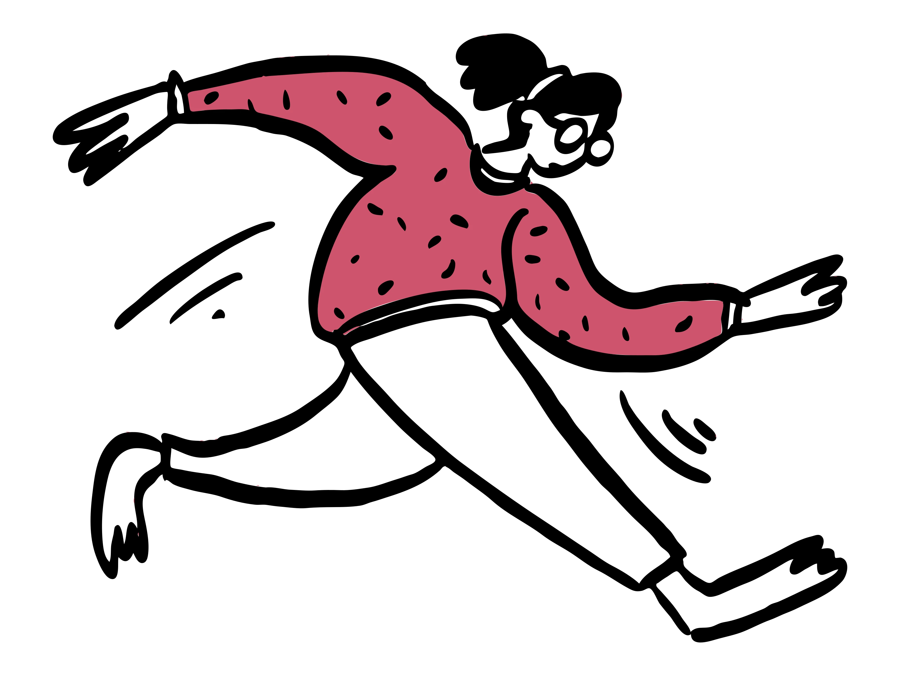
Les exercices présentés sont développés en utilisant HTML, CSS et JavaScript vanilla
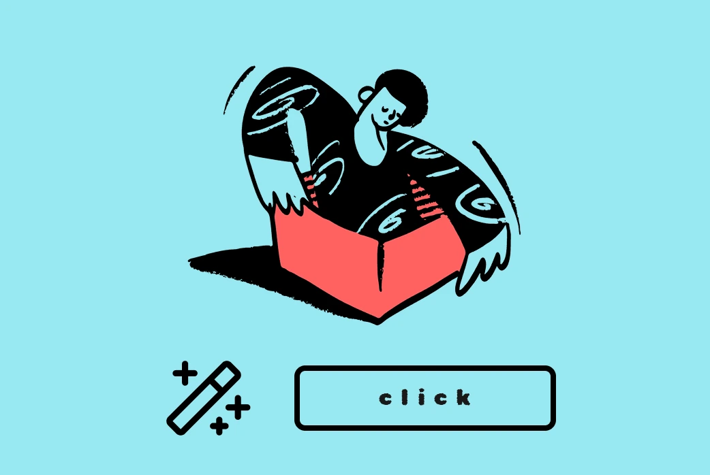
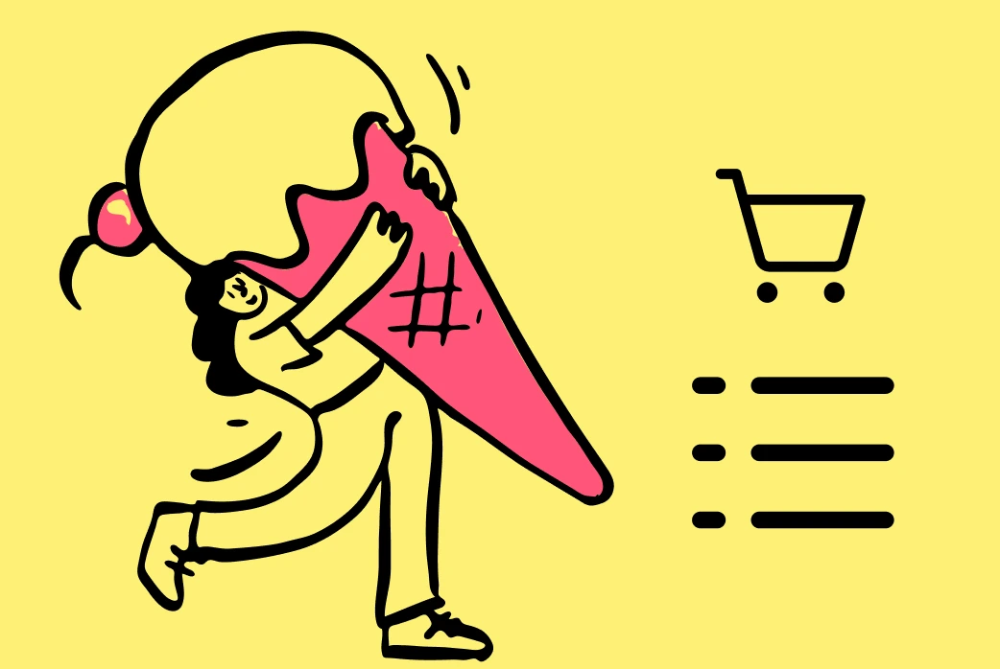
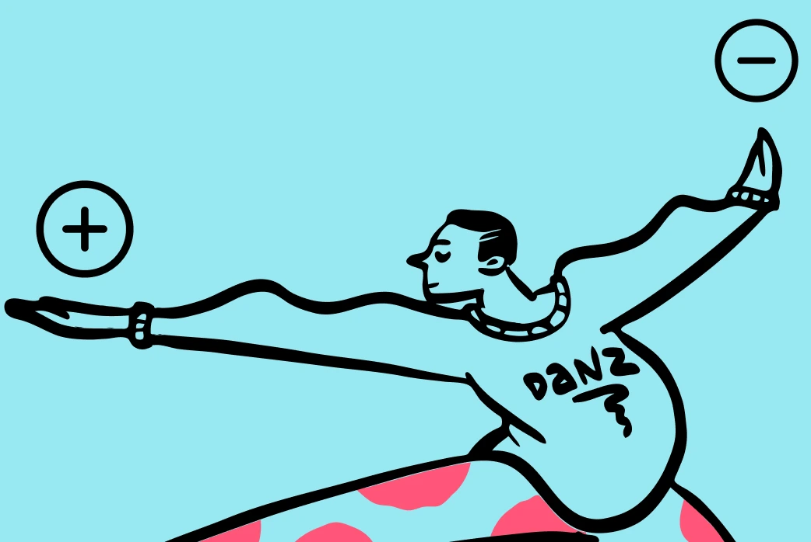
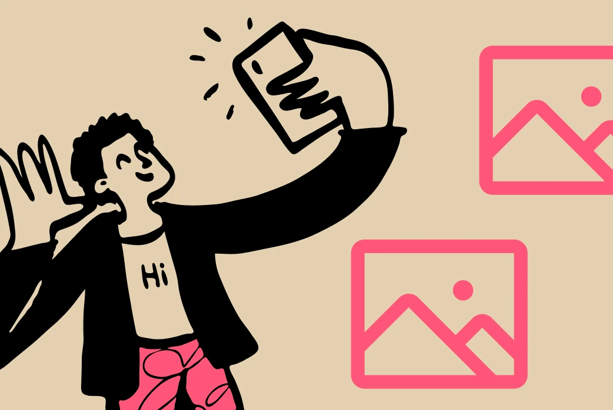
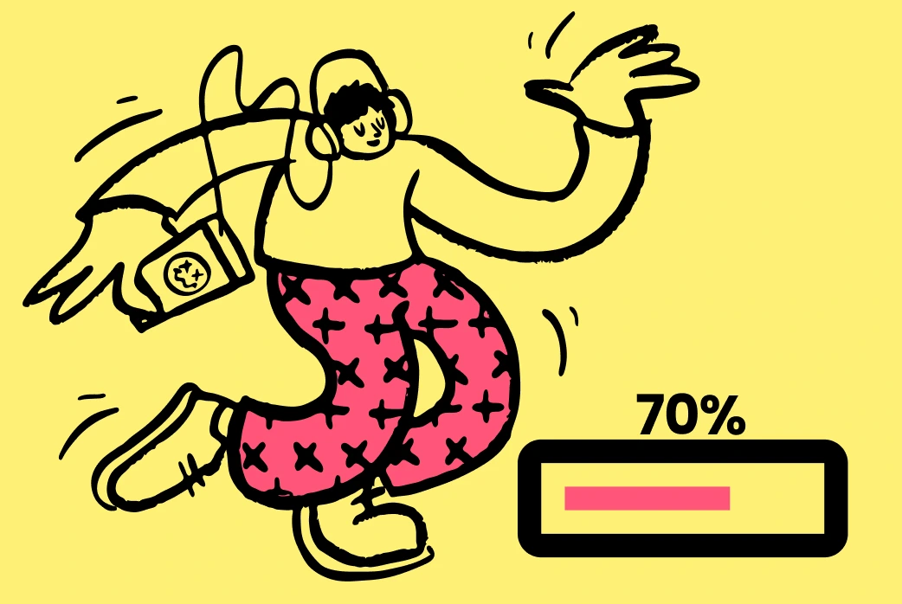
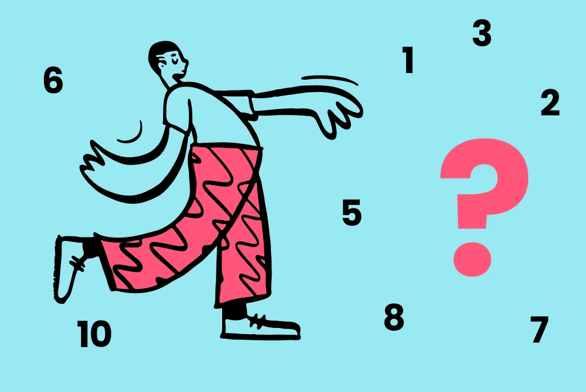
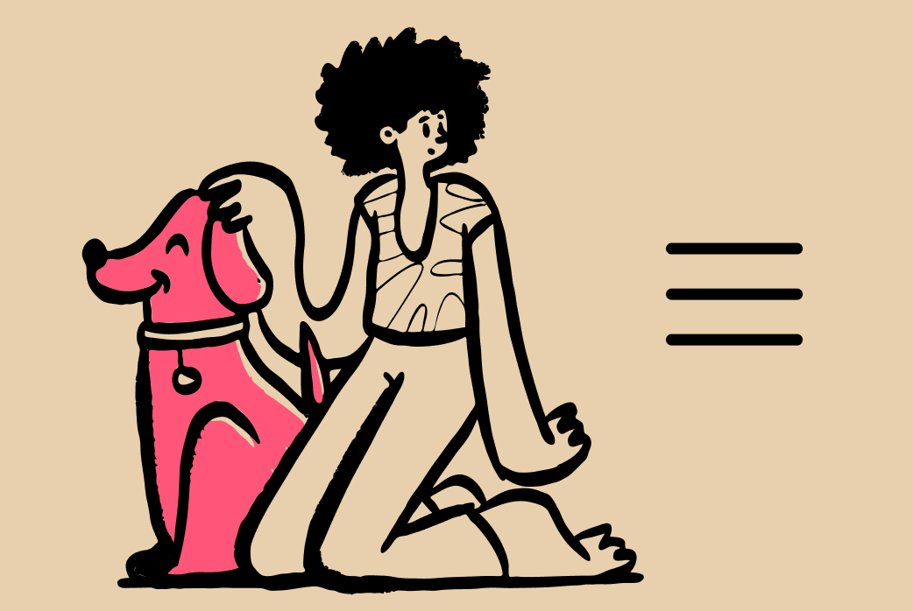
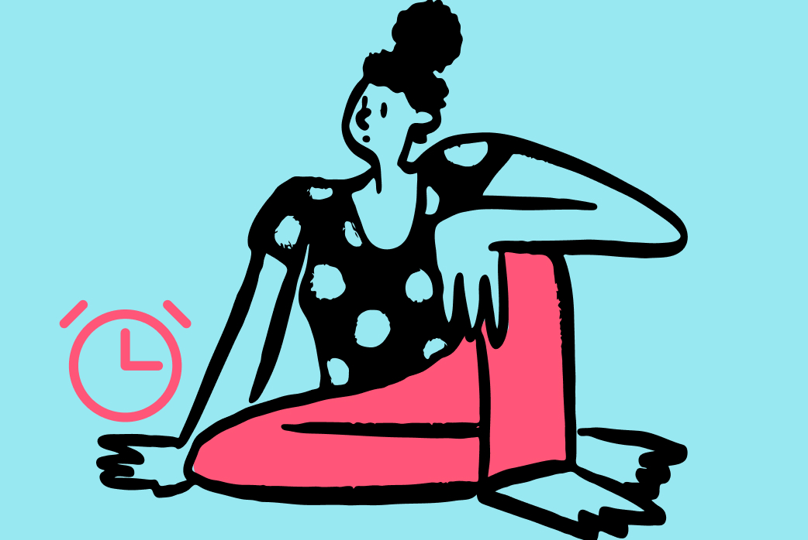
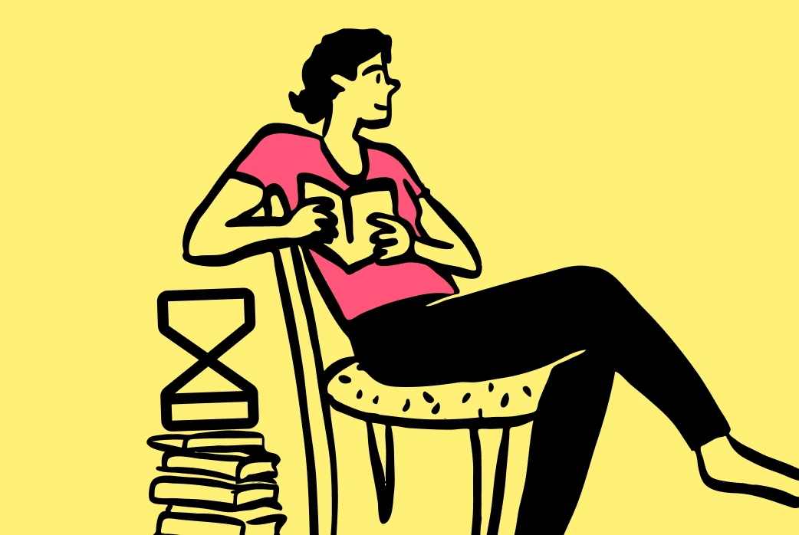
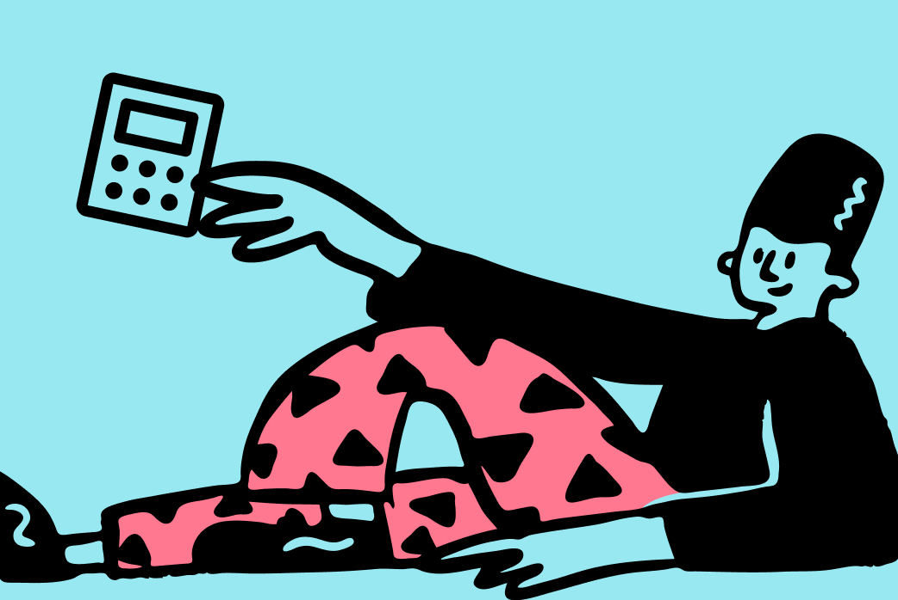